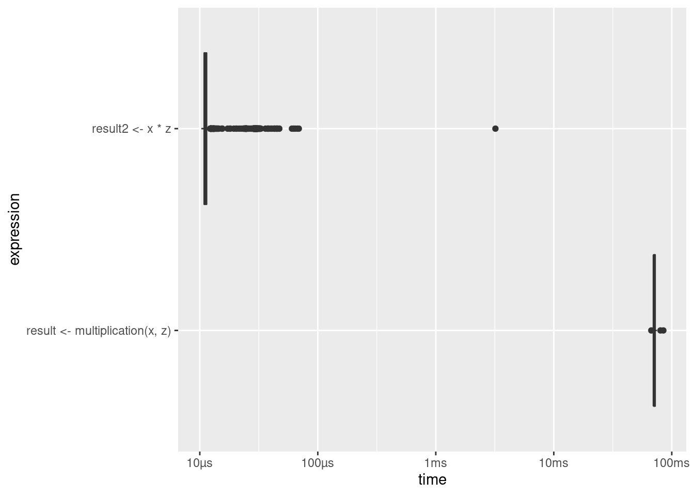

Chapter 2 Software: Programming with (Big) Data
The programming language and computing environment R is particularly made for writing code in a data analytics context. However, the language was developed at a time when data analytics was primarily focused on moderately sized data sets that can easily be loaded/imported and worked with on a common PC. Depending on the field or industry you work in, this is not anymore the case today. In this chapter, we will explore some of R’s (potential) weaknesses as well as how to avoid them and how to exploit some of R’s strengths when it comes to working with larger data sets. The aim of the chapter is to enable the reader to recognize potential bottle necks in the code and to write more efficient R code. The first part of this chapter is primarily focused on understanding code profiling and improving code with the aim of making computationally intense data analytics scripts in R run faster. This chapter presupposes basic knowledge of R data structures and data types as well as basic programming concepts such as loops and control statements.2
While R is a very useful tool for many aspects of big data analytics that we will cover in the following chapters, R alone is not enough for a basic big data analytics toolbox. Therefore, the second part of this chapter introduces the reader to the Structured Query Language (SQL), a programming language designed for managing data in relational databases. Although the type of databases where SQL is traditionally encountered would not necessarily be considered part of big data analytics today, some versions of SQL are now widely used with systems particularly designed for big data analytics (such as, for example, Amazon Athena and Google BigQuery). Hence, with a good knowledge of R in combination with basic SQL skills, you will be able to productively engage with a large array of practical big data analytics problems.
Programming tasks in the context of data analytics typically fall into one of the following broad categories.
- Procedures to import/export data.
- Procedures to clean and filter data.
- Implement functions for statistical analysis.
When writing a program to process large amounts of data in any of these areas, it is helpful to take into consideration the following design choices:
- Which basic (already implemented) R functions are more or less suitable as building blocks for the program?
- How can we exploit/avoid some of R’s lower-level characteristics in order to write more efficient code?
- Is there a need to interface with a lower-level programming language in order to speed up the code? (advanced topic)
Finally, there is an additional important point to be made regarding the implementation of functions for statistical analysis: Independent of how we write a statistical procedure in R (or in any other language, for that matter), keep in mind that there might be an alternative statistical procedure/algorithm that is faster but delivers approximately the same result (as long as we use a sufficiently large data sets).
2.1 Building blocks for programming with big data
When writing a program in R, we can rely on many already implemented functions on which we can build. Often, there are even several functions already implemented that take care of essentially the same task. When the amount of data to be processed by these functions is not large, it doesn’t matter that much which ones we choose to build our program on. However, when we are writing a program which likely has to process large amounts of data, we should think more closely about which building blocks we choose to base our program on. For example, when writing the data-import part of a program, we could use the traditional read.csv() or fread() from the data.table-package. The result is very similar (in many situations, the differences of the resulting objects would not matter at all).
# read a CSV-file the 'traditional way'
flights <- read.csv("data/flights.csv")
class(flights)## [1] "data.frame"# alternative (needs the data.table package)
library(data.table)
flights <- fread("data/flights.csv")
class(flights)## [1] "data.table" "data.frame"However, the latter approach is usually much faster.
system.time(flights <- read.csv("data/flights.csv"))## user system elapsed
## 1.220 0.016 1.235system.time(flights <- fread("data/flights.csv"))## user system elapsed
## 0.269 0.000 0.052Throughout the rest of this book, I will point you to specialized R packages and functions that are particularly designed to work with large amounts of data (for every component of a data pipeline, import, cleaning, filtering, and analyzing data). Where necessary, we will also look more closely at the underlying concepts that explain why these specialized packages work better with large amounts of data than the standard approaches.
2.2 Measuring R performance
When writing a data analysis script in R that eventually will process large amounts of data, it generally makes sense to first test each crucial part of the script based on a small sub-sample. Otherwise each test you run might take up way too much time for a productive developing process. In order to nevertheless quickly recognize potential bottle necks and room for making your code more efficient, there are a couple of R packages that help you keep track of how long exactly each component of your script needs to process as well as how much memory is used overall or by specific objects. The table below lists some of the packages and functions that you should keep in mind when “profiling” and testing your code.
| package | function | purpose |
|---|---|---|
utils |
object.size() |
Provides an estimate of the memory that is being used to store an R object. |
pryr |
object_size() |
Works similarly to object.size(), but counts more accurately and includes the size of environments. |
pryr |
mem_used() |
Returns the total amount of memory (in megabytes) currently used by R. |
pryr |
mem_change() |
Shows the change in memory (in megabytes) before and after running code. |
base |
system.time() |
Returns CPU (and other) times that an R expression used. |
microbenchmark |
microbenchmark() |
Highly accurate timing of R expression evaluation. |
bench |
mark() |
Benchmark a series of functions. |
profvis |
profvis() |
Profiles an R expression and visualizes the profiling data (usage of memory, time elapsed, etc.). |
Most of these functions are used in an interactive way in the R console. They serve either of two purposes that are central to profiling and improving your code’s performance. First, in order to assess the performance of your R code you probably want to know how long it takes to run your entire script or a specific part of your script. The system.time()-function provides an easy way to check this. This function is loaded by default with R, there is no need to install an additional package. Simply wrap it around the line(s) of code that you want to assess.
# how much time does it take to run this loop?
system.time(for (i in 1:100) {i + 5})## user system elapsed
## 0.011 0.000 0.011Note that each time you run this line of code, the returned amount of time varies slightly. This has to do with the fact that the actual time needed to run a line of code can depend on various other processes happening at the same time on your computer.
The microbenchmark and bench packages provide additional functions to measure execution time in more sophisticated ways. In particular, they account for the fact that the processing time for the same code might vary and automatically run the code several times in order to return statistics about the processing time. In addition, microbenchmark() provides highly detailed and highly accurate timing of R expression evaluation. The function is particularly useful to accurately find even “minor” room for improvement when testing a data analysis script on a smaller sub-sample (which might scale when working on a large data set). For example, suppose you need to run a for-loop over millions of iterations and there are different ways to implement the loop of the body (which does not take too much time to process in one iteration). Note that the function actually evaluates the R expression in question many times and returns a statistical summary of the timings.
# load package
library(microbenchmark)
# how much time does it take to run this loop (exactly)?
microbenchmark(for (i in 1:100) {i + 5})## Unit: milliseconds
## expr min lq mean
## for (i in 1:100) { i + 5 } 1.018 1.053 1.128
## median uq max neval
## 1.079 1.133 2.65 100Second, a key aspect to improving the performance of data analysis scripts in R is to detect inefficient memory allocation as well as avoiding that an R-object is either growing too much or is generally too large to handle in memory. To this end, you might want to monitor how much memory R occupies at different points in your script as well as how much memory is taken up by individual R objects. For example, object.size() returns the size of an R object, that is the amount of memory it takes up in the R environment in bytes (pryr::object_size() counts slightly more accurately).
hello <- "Hello, World!"
object.size(hello)## 120 bytesThis is useful to implementing your script with a generally less memory-intense approach. For example, for a specific task it might not matter whether a particular variable is stored as a character vector or a factor. But storing it as character turns out to be more memory intense (why?).
# initiate a large string vector containing letters
large_string <- rep(LETTERS[1:20], 1000^2)
head(large_string)## [1] "A" "B" "C" "D" "E" "F"# store the same information as a factor in a new variable
large_factor <- as.factor(large_string)
# is one bigger than the other?
object.size(large_string) - object.size(large_factor)## 79999456 bytespryr::mem_change() is useful to track how different parts of your script affect the overall memory occupied by R.
# load package
library(pryr)## Registered S3 method overwritten by 'pryr':
## method from
## print.bytes Rcpp##
## Attaching package: 'pryr'## The following object is masked from 'package:data.table':
##
## address# initiate a vector with 1000 (pseudo)-random numbers
mem_change(
thousand_numbers <- runif(1000)
)## 21.6 kB# initiate a vector with 1M (pseudo)-random numbers
mem_change(
a_million_numbers <- runif(1000^2)
)## 8 MBFinally, bench::mark() allows you to easily compare the performance of several different implementations of a code chunk both regarding timing and memory usage. The following code example illustrates this in a comparison of two approaches to computing the product of each element in a vector x with a factor z.
# load packages
library(bench)
# initiate variables
x <- 1:10000
z <- 1.5
# approach 1: loop
multiplication <-
function(x,z) {
result <- c()
for (i in 1:length(x)) {result <- c(result, x[i]*z)}
return(result)
}
result <- multiplication(x,z)
head(result)## [1] 1.5 3.0 4.5 6.0 7.5 9.0# approach II: "R-style"
result2 <- x * z
head(result2)## [1] 1.5 3.0 4.5 6.0 7.5 9.0# comparison
benchmarking <-
mark(
result <- multiplication(x,z),
result2 <- x * z,
min_iterations = 50
)
benchmarking[, 4:9]## # A tibble: 2 x 3
## `itr/sec` mem_alloc `gc/sec`
## <dbl> <bch:byt> <dbl>
## 1 14.7 382MB 77.2
## 2 86438. 78.2KB 8.64In addition, the bench package provides a simple way to visualize these outputs:
plot(benchmarking, type = "boxplot")## Loading required namespace: tidyr
Finally, to analyze the performance of your entire script/program the profvis package provides visual summaries to quickly detect the most prominent bottle necks. You can either call this via the profvis() function with the code section to be profiled as argument, or via the RStudio user interface by clicking on the Code Tools menu in the editor window and select “Profile selected lines.”
# load package
library(profvis)
# analyse performance of several lines of code
profvis({
x <- 1:10000
z <- 1.5
# approach 1: loop
multiplication <-
function(x,z) {
result <- c()
for (i in 1:length(x)) {result <- c(result, x[i]*z)}
return(result)
}
result <- multiplication(x,z)
# approach II: "R-style"
result2 <- x * z
head(result2)
})2.3 Writing efficient code
This subsection touches upon several prominent aspects of writing efficient/fast R code.3
2.3.1 Memory allocation and growing objects
R tends to “grow” already initiated objects in memory when they are modified. At the initiation of the object a small amount of memory is occupied at some location in memory. In simple terms, once the object grows, it might not have enough space where it is currently located. Hence, it needs to be “moved” to another location in memory with more space available. This moving, or “re-allocation” of memory, needs time and slows down the overall process.
This potential is most practically illustrated with a for-loop in which each iteration’s result is stored as an element of a vector (the object in question). To avoid growing this object, you need to instruct R to pre-allocate the memory necessary to contain the final result. If we don’t do that, each iteration of the loop causes R to re-allocate memory because the number of elements in the vector/list is changing. In simple terms, this means that R needs to execute more steps in each iteration.
In the following example, we compare the performance of two functions. One taking this principle into account, the other not. The functions take a numeric vector as input and return the square root of each element of the numeric vector.
# naïve implementation
sqrt_vector <-
function(x) {
output <- c()
for (i in 1:length(x)) {
output <- c(output, x[i]^(1/2))
}
return(output)
}
# implementation with pre-allocation of memory
sqrt_vector_faster <-
function(x) {
output <- rep(NA, length(x))
for (i in 1:length(x)) {
output[i] <- x[i]^(1/2)
}
return(output)
}As a proof of concept we use system.time() to measure the difference in speed for various input sizes.4
# the different sizes of the vectors we will put into the two functions
input_sizes <- seq(from = 100, to = 10000, by = 100)
# create the input vectors
inputs <- sapply(input_sizes, rnorm)
# compute ouputs for each of the functions
output_slower <-
sapply(inputs,
function(x){ system.time(sqrt_vector(x))["elapsed"]
}
)
output_faster <-
sapply(inputs,
function(x){ system.time(sqrt_vector_faster(x))["elapsed"]
}
)The following plot shows the difference in the performance of the two functions.
# load packages
library(ggplot2)
# initiate data frame for plot
plotdata <- data.frame(time_elapsed = c(output_slower, output_faster),
input_size = c(input_sizes, input_sizes),
Implementation= c(rep("sqrt_vector", length(output_slower)),
rep("sqrt_vector_faster", length(output_faster))))
# plot
ggplot(plotdata, aes(x=input_size, y= time_elapsed)) +
geom_point(aes(colour=Implementation)) +
theme_minimal(base_size = 18) +
theme(legend.position = "bottom") +
ylab("Time elapsed (in seconds)") +
xlab("No. of elements processed") Clearly, the version with pre-allocation of memory (avoiding growing an object) is overall much faster. In addition, we see that the problem with the growing object in the naive implementation tends to get worse with each iteration. The take-away message for the practitioner: if possible, always initiate the “container” object (list, matrix, etc.) for iteration results as an empty object of the final size/dimensions.
The attentive reader and experienced R coder will have noticed by this point, that both of the functions implemented above are not really smart practice to solve the problem at hand. If you consider yourself part of this group the next subsection will make you more comfortable.
2.3.2 Vectorization in basic R functions
We can further improve the performance of this function by exploiting a particular characteristic of R: in R ‘everything is a vector’ and many of the most basic R functions (such as math operators) are vectorized. In simple terms, this means that an operation is implemented to directly work on vectors in such a way that it can take advantage of the similarity of each of the vector’s elements. That is, R only has to figure out once how to apply a given function to a vector element in order to apply it to all elements of the vector. In a simple loop, R has to go through the same ‘preparatory’ steps again and again in each iteration.
Following up on the problem from the previous subsection, we implement an additional function called sqrt_vector_fastest that exploits the fact that math operators in R are vectorized functions. We then re-run the same speed test as above with this function.
# implementation with vectorization
sqrt_vector_fastest <-
function(x) {
output <- x^(1/2)
return(output)
}
# speed test
output_fastest <-
sapply(inputs,
function(x){ system.time(sqrt_vector_fastest(x))["elapsed"]
}
)Let’s have a look at whether this improves the function’s performance further.
# load packages
library(ggplot2)
# initiate data frame for plot
plotdata <- data.frame(time_elapsed = c(output_faster, output_fastest),
input_size = c(input_sizes, input_sizes),
Implementation= c(rep("sqrt_vector_faster", length(output_faster)),
rep("sqrt_vector_fastest", length(output_fastest))))
# plot
ggplot(plotdata, aes(x=time_elapsed, y=Implementation)) +
geom_boxplot(aes(colour=Implementation),
show.legend = FALSE) +
theme_minimal(base_size = 18) +
xlab("Time elapsed (in seconds)")
Clearly, the vectorized implementation is even faster. The take-away message: make use of vectorized basic R functions where possible. At this point you might wonder: why not always use vectorization over loops, when working with R? This question (and closely related similar questions) have been fiercely debated in the R online community over the last few years. Also the debate contains and has contained several (in my view) slightly misleading arguments. A simple answer to this question is: it is in fact not that simple to use actual vectorization for every kind of problem in r. There are a number of functions often mentioned to achieve “vectorization” easily in R, however, they do not actually implement actual vectorization in its original technical sense (the type just demonstrated here with the R math operators). Since this point is very prominent in debates about how to improve R code, the next subsection attempts to summarize the most important aspects to keep in mind.
2.3.3 apply-type functions and vectorization
There are basically two ways to make use of some form of “vectorization” instead of writing loops.
One approach is to use an apply-type function instead of loops. Note though, that the apply-type functions primarily make the writing of code more efficient. They still run a loop under the hood. Nevertheless, some apply-type functions might still outperform an explicit loops as they are might be better implemented.5
Consider, for example, lapply(), a function that takes a vector (atomic or list) as input and applies a function FUN to each of its elements. It is a straightforward alternative to for-loops in many situations (and it automatically takes care of the “growing objects” problem discussed above). The following example shows how we can get the same result by either writing a loop or using lapply(). The aim of the code example is to import the Health News in Twitter Data Set by Karami et al. (2017). The raw data consists of several text files that need to be imported to R consecutively.
The text-files are located in data/twitter_texts/. For either approach of importing all of these files, we first need a list of the paths to all of the files. We can get this with list.files(). Also, for either approach we will make use of the fread-function in the data.table-package.
# load packages
library(data.table)
# get a list of all file-paths
textfiles <- list.files("data/twitter_texts", full.names = TRUE)Now we can read in all the text files with a for-loop as follows.
# prepare loop
all_texts <- list()
n_files <- length(textfiles)
length(all_texts) <- n_files
# read all files listed in textfiles
for (i in 1:n_files) {
all_texts[[i]] <- fread(textfiles[i])
}The imported files are now stored as data.table-objects in the list all_texts. With the following line of code we combine all of them in one data.table.
# combine all in one data.table
twitter_text <- rbindlist(all_texts)
# check result
str(twitter_text)## Classes 'data.table' and 'data.frame': 42422 obs. of 3 variables:
## $ V1:integer64 585978391360221184 585947808772960257 585947807816650752 585866060991078401 585794106170839041 585733482413891584 585733481608646657 585701601131765761 ...
## $ V2: chr "Thu Apr 09 01:31:50 +0000 2015" "Wed Apr 08 23:30:18 +0000 2015" "Wed Apr 08 23:30:18 +0000 2015" "Wed Apr 08 18:05:28 +0000 2015" ...
## $ V3: chr "Breast cancer risk test devised http://bbc.in/1CimpJF" "GP workload harming care - BMA poll http://bbc.in/1ChTBRv" "Short people's 'heart risk greater' http://bbc.in/1ChTANp" "New approach against HIV 'promising' http://bbc.in/1E6jAjt" ...
## - attr(*, ".internal.selfref")=<externalptr>Alternatively, we can make use of lapply as follows in order to achieve exactly the same.
# prepare loop
all_texts <- lapply(textfiles, fread)
# combine all in one data.table
twitter_text <- rbindlist(all_texts)
# check result
str(twitter_text)## Classes 'data.table' and 'data.frame': 42422 obs. of 3 variables:
## $ V1:integer64 585978391360221184 585947808772960257 585947807816650752 585866060991078401 585794106170839041 585733482413891584 585733481608646657 585701601131765761 ...
## $ V2: chr "Thu Apr 09 01:31:50 +0000 2015" "Wed Apr 08 23:30:18 +0000 2015" "Wed Apr 08 23:30:18 +0000 2015" "Wed Apr 08 18:05:28 +0000 2015" ...
## $ V3: chr "Breast cancer risk test devised http://bbc.in/1CimpJF" "GP workload harming care - BMA poll http://bbc.in/1ChTBRv" "Short people's 'heart risk greater' http://bbc.in/1ChTANp" "New approach against HIV 'promising' http://bbc.in/1E6jAjt" ...
## - attr(*, ".internal.selfref")=<externalptr>Finally, we can make use of Vectorization() in order to “vectorize” our own import function (written for this example). Again, this does not make use of vectorization in its original technical sense.
# initiate the import function
import_file <-
function(x) {
parsed_x <- fread(x)
return(parsed_x)
}
# 'vectorize' it
import_files <- Vectorize(import_file, SIMPLIFY = FALSE)
# Apply the vectorized function
all_texts <- import_files(textfiles)
twitter_text <- rbindlist(all_texts)
# check the result
str(twitter_text)## Classes 'data.table' and 'data.frame': 42422 obs. of 3 variables:
## $ V1:integer64 585978391360221184 585947808772960257 585947807816650752 585866060991078401 585794106170839041 585733482413891584 585733481608646657 585701601131765761 ...
## $ V2: chr "Thu Apr 09 01:31:50 +0000 2015" "Wed Apr 08 23:30:18 +0000 2015" "Wed Apr 08 23:30:18 +0000 2015" "Wed Apr 08 18:05:28 +0000 2015" ...
## $ V3: chr "Breast cancer risk test devised http://bbc.in/1CimpJF" "GP workload harming care - BMA poll http://bbc.in/1ChTBRv" "Short people's 'heart risk greater' http://bbc.in/1ChTANp" "New approach against HIV 'promising' http://bbc.in/1E6jAjt" ...
## - attr(*, ".internal.selfref")=<externalptr>The take-away message: instead of writing simple loops, use apply-type functions to save time writing code (and make the code easier to read) and automatically avoid memory-allocation problems.
2.3.4 Avoid unnecessary copying
The “growing objects” problem discussed above is only one aspect that can lead to inefficient use of memory when working with R. Another potential problem of using up more memory than necessary during an execution of an R-script, is how R handles objects/variables and their names.
Consider the following line of code.
a <- runif(10000)what is usually said to describe what is happening here is something along the lines of “we initiate a variable called a and assign a numeric vector with 10,000 random numbers. What in fact happens is that the name a is assigned to the integer vector (which in turn exists at a specific memory address). Thus values do not have names but names have values. This has important consequences for memory allocation and performance. For example, because a is in fact just a name attached to a value, the following does not involve any copying of values. It simply”binds" another name, b, to the same value to which a is already bound.
b <- aWe can proof this in two ways. First, if what I just stated was not true, the line above would actually lead to more memory being occupied by the current R session. However, this is not the case:
object_size(a)## 80 kBmem_change(c <- a)## -582 kBSecond, we can see that the values to which a and b are bound are stored at the same memory address. Hence, they are the same values.
# load packages
library(lobstr)##
## Attaching package: 'lobstr'## The following objects are masked from 'package:pryr':
##
## ast, mem_used# check memory addresses of objects
obj_addr(a)## [1] "0x555a5084abe0"obj_addr(b)## [1] "0x555a5084abe0"Now you probably wonder, what happens to b if we modify a. After all, if the values to which b is bound are changed when we write code concerning a, we might end up with very surprising output. The answer is, and this is key (!), once we modify a, the values need to be copied in order to ensure the integrity of b. Only at this point, our program will require more memory.
# check the first element's value
a[1]## [1] 0.4272b[1]## [1] 0.4272# modify a, check memory change
mem_change(a[1] <- 0)## 77.6 kB# check memory addresses
obj_addr(a)## [1] "0x555a548c2ce0"obj_addr(b)## [1] "0x555a5084abe0"Note that the entire vector needed to be copied for this. There is, of course, a lesson from all this regarding writing efficient code. Knowing how actual copying of values does occur helps avoiding unnecessary copying. The larger an object, the more time it will take to copy it in memory. Objects with a single binding get modified in place (no copying):
mem_change(d <- runif(10000))## 80.2 kBmem_change(d[1] <- 0)## 584 B2.3.5 Releasing memory
Closely related to the issue of copy-upon-modify, is the issue of “releasing” memory via “garbage collection.” If your program uses up a lot of (too much) memory (typical for working with large data sets), all processes on your computer might substantially slow down (we will look more closely into why this is the case in the next chapter). Hence, you might want to remove/delete an object once you do not need it anymore. This can be done with the rm() function.
mem_change(large_vector <- runif(10^8))## 800 MBmem_change(rm(large_vector))## -800 MBrm() removes all objects that are currently accessible in the global R environment. However, some objects/values might technically not be visible/accessible anymore (for example, objects that have been created in a function which has since returned the function output). To also release memory occupied by these objects you can call gc() (the garbage collector). While R will automatically collect the garbage once it is close to running out of memory, explicitly calling gc can still improve the performance of your script when working with large datasets. This is in particular the case when R is not the only data-intense process running on your computer. For example, when running an R script involving the repeated querying of data from a local SQL database and the subsequent memory-intense processing of this data in R, you can avoid using up too much memory by running rm and gc explicitly.6
2.3.6 Beyond R
So far, we have explored idiosyncrasies of R we should be aware of when writing programs to handle and analyze large data sets. While this has shown that R has many advantages for working with data, it also revealed some aspects of R that might result in low performance compared other programming languages. A simple generic explanation for this is that R is an interpreted language, meaning that when we execute R code, it is processed (statement by statement) by an ‘interpreter’ that translates the code into machine code (without the user giving any specific instructions). In contrast, when writing code in a ‘compiled language,’ we first have to explicitly compile the code and then run the compiled program. Running code that is already compiled is typically much faster than running R code that has to be interpreted before it can actually be processed by the CPU.
For advanced programmers, R offers various options to directly make use of compiled programs (for example, written in C, C++, or FORTRAN). In fact several of the core R functions installed with the basic R distribution are implemented in one of these lower-level programming languages and the R function we call simply interacts with these functions.
We can actually investigate this by looking at the source code of an R function. When simply typing the name of a function (such as our import_file()) to the console, R is printing the function’s source code to the console.
import_file## function(x) {
## parsed_x <- fread(x)
## return(parsed_x)
## }
## <bytecode: 0x555a4daefc70>However, if we do the same for function sum, we don’t see any actual source code.
sum## function (..., na.rm = FALSE) .Primitive("sum")Instead .Primitive() indicates that sum() is actually referring to an internal function (in this case implemented in C).
While the use of functions implemented in a lower-level language is a common technique to improve the speed of ‘R’ functions, it is particularly prominent in the context of functions/packages made to deal with large amounts of data (such as the data.table package).
2.4 SQL basics
Are tomorrow’s bigger computers going to solve the problem? For some people, yes—their data will stay the same size and computers will get big enough to hold it comfortably. For other people it will only get worse—more powerful computers means extraordinarily larger datasets. If you are likely to be in this latter group, you might want to get used to working with databases now.
The Structured Query Language (SQL) has become a bread-and-butter tool for data analysts and data scientists due to its broad application in systems used to store large amounts of data. While traditionally only encountered in the context of structured data stored in relational database management systems, some versions of it are now also used to query data from data warehouse systems (e.g. Amazon Redshift) and even to query massive amounts (terabytes or even petabytes) of data stored in data lakes (e.g., Amazon Athena). In all of these applications, SQL’s purpose (from the data analytics’ perspective) is to provide a convenient and efficient way to query data from mass storage for analysis. Instead of importing a CSV file into R and then filtering it in order to get to the analytic data set, we use SQL to express how the analytic dataset should look like (which variables and rows should be included).
The latter point is very important to keep in mind when already having experience with a language like R and learning SQL for the first time. In R we write code to instruct the computer what to do with the data. For example, we tell it to import a csv file called economics.csv as a data.table, then we instruct it to remove observations which are older than a certain date according to the date column, then we instruct it to compute the average of the unemploy column values for each year based on the date column and then return the result as a separate data frame.
# import data
econ <- read.csv("data/economics.csv")
# filter
econ2 <- econ["1968-01-01"<=econ$date,]
# compute yearly averages (basic R approach)
econ2$year <- year(econ2$date)
years <- unique(econ2$year)
averages <- sapply(years, FUN = function(x) mean(econ2[econ2$year==x,"unemploy"]))
output <- data.frame(year=years, average_unemploy=averages)
# inspect the first few lines of the result
head(output)## year average_unemploy
## 1 1968 2797
## 2 1969 2830
## 3 1970 4127
## 4 1971 5022
## 5 1972 4876
## 6 1973 4359In contrast, when using SQL we write code that describes how the final result is supposed to look like. The SQL engine processing the code then takes care of the rest and returns the result in the most efficient way.7
SELECT
strftime('%Y', `date`) AS year,
AVG(unemploy) AS average_unemploy
FROM econ
WHERE "1968-01-01"<=`date`
GROUP BY year LIMIT 6;| year | average_unemploy |
|---|---|
| 1968 | 2797 |
| 1969 | 2830 |
| 1970 | 4127 |
| 1971 | 5022 |
| 1972 | 4876 |
| 1973 | 4359 |
For the moment, we will only focus on the code and ignore the underlying hardware and database concepts (those will be discussed in more detail in chapter 5).
2.4.1 First steps in SQL(ite)
In order to get familiar with coding in SQL, we work with a free and easy-to-use version of SQL called SQLite. SQLite is a free full-featured SQL database engine widely used across platforms. It comes usually pre-installed with Windows and Mac/OSX distributions and has (from the user’s perspective) all the core features of more sophisticated SQL versions. Unlike the more sophisticated SQL systems, SQLite does not rely explicitly on a client/server-model. That is, there is no need to set up your database on a server and then query it from a client interface. In fact, setting it up is straightforward. In the terminal, we can directly call SQLite as a command-line tool (on most modern computers the command is now sqlite3, SQLite version 3).
In this first code example, we set up an SQLite database using the command line. In the file structure of the book repository, we first switch to the data directory.
cd data With one simple command, we start up SQLite, create a new database called mydb.sqlite and connect to the newly created database.8
sqlite3 mydb.sqliteThis created a new file mydb.sqlite in our data directory which contains the newly created database. And, we are now running sqlite in the terminal (indicated with the sqlite>. This means we can now type SQL code in the terminal to run queries and other SQL commands.
At this point, the newly created database does not contain any data yet. There are no tables in it. We can see this by running the .tables command.
.tablesAs expected, nothing is returned. Now, let’s create our first table and import the economics.csv data set to it. In SQLite, it makes sense to first set up an empty table in which all column data types are defined before importing data from a CSV-file to it. If a CSV is directly imported to a new table (without type definitions), all columns will be set to TEXT (similar to character in R) by default. Setting the right data type for each variable follows essentially the same logic as setting the data types of a data frame’s columns in R (with the difference that in SQL this also affects how the data is stored on disk).9
In a first step, we thus create a new table called econ.
-- Create the new table
CREATE TABLE econ(
"date" DATE,
"pce" REAL,
"pop" REAL,
"psavert" REAL,
"uempmed" REAL,
"unemploy" INTEGER
);Then, we can import the data from the csv file, by first switching to CSV mode via the command .mode csv and then importing the data to econ with .import. The .import command expects as a first argument the path to the CSV file on disk and as a second argument the name of the table to import the data to.
-- prepare import
.mode csv
-- import data from csv
.import --skip 1 economics.csv econNow we can have a look at the new database table in SQLite. .tables shows that we now have one table called econ in our database and .schema displays the structure of the new econ table.
.tables# econ.schema econ# CREATE TABLE econ(
# "date" DATE,
# "pce" REAL,
# "pop" REAL,
# "psavert" REAL,
# "uempmed" REAL,
# "unemploy" INTEGER
# );With this, we can start querying data with SQLite. In order to make the query results easier to read, we first set two options regarding how query results are displayed in the terminal. .header on enables the display of the column names in the returned query results. And .mode columns arranges the query results in columns.
.header on.mode columnsIn our first query, we select all (*) variable values of the observation of January 1968.
select * from econ where date = '1968-01-01';| date | pce | pop | psavert | uempmed | unemploy |
|---|---|---|---|---|---|
| 1968-01-01 | 531.5 | 199808 | 11.7 | 5.1 | 2878 |
2.4.1.1 Simple queries
Now let’s select all dates and unemployment values of observations with more than 15 million unemployed, ordered by date.
select date,
unemploy from econ
where unemploy > 15000
order by date;| date | unemploy |
|---|---|
| 2009-09-01 | 15009 |
| 2009-10-01 | 15352 |
| 2009-11-01 | 15219 |
| 2009-12-01 | 15098 |
| 2010-01-01 | 15046 |
| 2010-02-01 | 15113 |
| 2010-03-01 | 15202 |
| 2010-04-01 | 15325 |
| 2010-11-01 | 15081 |
2.4.2 Joins
So far, we have only considered queries involving one table of data. However, SQL provides a very efficient way to join data from various tables. Again, the way of writing SQL code is the same: you describe how the final table should look like and from where the data is to be selected.
Let’s extend the previous example by importing an additional table to our mydb.sqlite. The additional data is stored in the file inflation.csv in the book’s data folder and contains information on the US yearly inflation rate measured in percent.10
-- Create the new table
CREATE TABLE inflation(
"date" DATE,
"inflation_percent" REAL
);
-- prepare import
.mode csv
-- import data from csv
.import --skip 1 inflation.csv inflation
-- switch back to column mode
.mode columnsNote that the data stored in econ contains monthly observations, while inflation contains yearly observations. We can thus only meaningfully combine the two data sets at the level of years. Again using the combination of data sets in R as a reference point, here is what we would like to achieve expressed in R. The aim is to get a table that serves as basis for a Phillips curve plot, with yearly observations and the variables year, average_unemp_percent, and inflation_percent.
# import data
econ <- read.csv("data/economics.csv")
inflation <- read.csv("data/inflation.csv")
# prepare variable to match observations
econ$year <- lubridate::year(econ$date)
inflation$year <- lubridate::year(inflation$date)
# create final output
years <- unique(econ2$year)
averages <- sapply(years, FUN = function(x) {
mean(econ2[econ2$year==x,"unemploy"]/econ2[econ2$year==x,"pop"])*100
} )
unemp <- data.frame(year=years,
average_unemp_percent=averages)
# combine via the year column
# keep all rows of econ
output<- merge(unemp, inflation[, c("year", "inflation_percent")], by="year")
# inspect outpu
head(output)## year average_unemp_percent inflation_percent
## 1 1968 1.394 4.272
## 2 1969 1.396 5.462
## 3 1970 2.013 5.838
## 4 1971 2.419 4.293
## 5 1972 2.324 3.272
## 6 1973 2.058 6.178Now let’s look at how the same table can be created in SQLite.
SELECT
strftime('%Y', econ.date) AS year,
AVG(unemploy/pop)*100 AS average_unemp_percent,
inflation_percent
FROM econ INNER JOIN inflation ON year = strftime('%Y', inflation.date)
GROUP BY year| year | average_unemp_percent | inflation_percent |
|---|---|---|
| 1967 | 1.512 | 2.773 |
| 1968 | 1.394 | 4.272 |
| 1969 | 1.397 | 5.462 |
| 1970 | 2.013 | 5.838 |
| 1971 | 2.419 | 4.293 |
| 1972 | 2.324 | 3.272 |
When done working with the database, we can exit SQLite with the .quit command.
Appendix B reviews the most relevant concepts regarding data types and data structures in R from a data analytics perspective.↩︎
This is not intended to be a definitive guide to writing efficient R code in every aspect. Instead the subsection aims at covering most of the typical pitfalls to avoid and to provide an easy-to-remember number of tricks to keep in mind when writing R code for computationally intense tasks.↩︎
We generate the numeric input by drawing vectors of (pseudo) random numbers via
rnorm().↩︎If you know how to implement efficient for-loops in R (as you are certainly expected at this point), there is not much to gain from using an
apply-type function instead of a loop, apart from making your code easier to read (and faster to write).↩︎Note that running
gc()takes some time, so you should not overdo it. As a rule of thumb, rungc()after removing a really large object.↩︎In particular, the user does not need to explicitly instruct SQL at which point in the process which part (filtering, selecting variables, aggregating, creating new variables etc.) of the query should be processed. SQL will automatically find the most efficient way to process the query.↩︎
If there is already a database called
mydb.sqlitein this folder, the same command would simply start up SQLite and connect to the existing database.↩︎The most commonly used data types in SQL all have a very similar R equivalent:
DATEis likeDatein R,REALlikenumeric/double,INTEGERlikeinteger, andTEXTlikecharacter.↩︎Like the data stored in
economics.csv, the data stored ininflation.csvis provided by the Federal Reserve Bank’s (FRED)[https://fred.stlouisfed.org/] website.↩︎